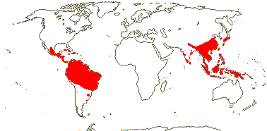

EMBRYOPSIDA Pirani & Prado
Gametophyte dominant, independent, multicellular, not motile, initially ±globular; showing gravitropism; acquisition of phenylalanine lysase [PAL], microbial terpene synthase-like genes +, triterpenoids produced by CYP716 enzymes, phenylpropanoid metabolism [lignans +, flavonoids + (absorbtion of UV radiation)], xyloglucans in primary cell wall, side chains charged; plant poikilohydrous [protoplasm dessication tolerant], ectohydrous [free water outside plant physiologically important]; thalloid, leafy, with single-celled apical meristem, tissues little differentiated, rhizoids +, unicellular; chloroplasts several per cell, pyrenoids 0; glycolate metabolism in leaf peroxisomes [glyoxysomes]; centrioles/centrosomes in vegetative cells 0, microtubules with γ-tubulin along their lengths [?here], interphase microtubules form hoop-like system; metaphase spindle anastral, predictive preprophase band + [with microtubules and F-actin; where new cell wall will form], phragmoplast + [cell wall deposition centrifugal, from around the anaphase spindle], plasmodesmata +; antheridia and archegonia jacketed, surficial; blepharoplast +, centrioles develop de novo, bicentriole pair coaxial, separate at midpoint, centrioles rotate, associated with basal bodies of cilia, multilayered structure + [4 layers: L1, L4, tubules; L2, L3, short vertical lamellae] (0), spline + [tubules from L1 encircling spermatid], basal body 200-250 nm long, associated with amorphous electron-dense material, microtubules in basal end lacking symmetry, stellate array of filaments in transition zone extended, axonemal cap 0 [microtubules disorganized at apex of cilium]; male gametes [spermatozoids] with a left-handed coil, cilia 2, lateral; oogamy; sporophyte multicellular, cuticle +, plane of first cell division transverse [with respect to long axis of archegonium/embryo sac], sporangium and upper part of seta developing from epibasal cell [towards the archegonial neck, exoscopic], with at least transient apical cell [?level], initially surrounded by and dependent on gametophyte, placental transfer cells +, in both sporophyte and gametophyte, wall ingrowths develop early; suspensor/foot +, cells at foot tip somewhat haustorial; sporangium +, single, terminal, dehiscence longitudinal; meiosis sporic, monoplastidic, MTOC [MTOC = microtubule organizing centre] associated with plastid, sporocytes 4-lobed, cytokinesis simultaneous, preceding nuclear division, quadripolar microtubule system +; wall development both centripetal and centrifugal, 1000 spores/sporangium, sporopollenin in the spore wall laid down in association with trilamellar layers [white-line centred lamellae; tripartite lamellae]; nuclear genome size [1C] <1.4 pg, main telomere sequence motif TTTAGGG, LEAFY and KNOX1 and KNOX2 genes present, ethylene involved in cell elongation; chloroplast genome with close association between trnLUAA and trnFGAA genes [precursors for starch synthesis], tufA gene moved to nucleus; mitochondrial trnS(gcu) and trnN(guu) genes +.
Many of the bolded characters in the characterization above are apomorphies of subsets of streptophytes along the lineage leading to the embryophytes, not apomorphies of crown-group embryophytes per se.
All groups below are crown groups, nearly all are extant. Characters mentioned are those of the immediate common ancestor of the group, [] contains explanatory material, () features common in clade, exact status unclear.
STOMATOPHYTES
Abscisic acid, L- and D-methionine distinguished metabolically; pro- and metaphase spindles acentric; sporophyte with polar transport of auxins, class 1 KNOX genes expressed in sporangium alone; sporangium wall 4≤ cells across [≡ eusporangium], tapetum +, secreting sporopollenin, which obscures outer white-line centred lamellae, columella +, developing from endothecial cells; stomata +, on sporangium, anomocytic, cell lineage that produces them with symmetric divisions [perigenous]; underlying similarities in the development of conducting tissue and of rhizoids/root hairs; spores trilete; shoot meristem patterning gene families expressed; MIKC, MI*K*C* genes, post-transcriptional editing of chloroplast genes; gain of three group II mitochondrial introns, mitochondrial trnS(gcu) and trnN(guu) genes 0.
[Anthocerophyta + Polysporangiophyta]: gametophyte leafless; archegonia embedded/sunken [only neck protruding]; sporophyte long-lived, chlorophyllous; cell walls with xylans.
POLYSPORANGIOPHYTA†
Sporophyte well developed, branched, branching apical, dichotomous, potentially indeterminate; hydroids +; stomata on stem; sporangia several, terminal; spore walls not multilamellate [?here].
TRACHEOPHYTA†
Vascular tissue + [tracheids, walls with bars of secondary thickening].
EXTANT TRACHEOPHYTA / VASCULAR PLANTS
Sporophyte with photosynthetic red light response, stomata open in response to blue light; plant homoiohydrous [water content of protoplasm relatively stable]; control of leaf hydration passive; plant endohydrous [physiologically important free water inside plant]; (condensed or nonhydrolyzable tannins/proanthocyanidins +); xyloglucans with side chains uncharged [?level], in secondary walls of vascular and mechanical tissue; lignins +; stem apex multicellular, with cytohistochemical zonation, plasmodesmata formation based on cell lineage; tracheids +, in both protoxylem and metaxylem, G- and S-types; sieve cells + [nucleus degenerating]; endodermis +; leaves/sporophylls spirally arranged, blades with mean venation density ca 1.8 mm/mm2 [to 5 mm/mm2], all epidermal cells with chloroplasts; sporangia adaxial, columella 0; tapetum glandular; ?position of transfer cells; MTOCs not associated with plastids, basal body 350-550 nm long, stellate array in transition region initially joining microtubule triplets; suspensor +, shoot apex developing away from micropyle/archegonial neck [from hypobasal cell, endoscopic], root lateral with respect to the longitudinal axis of the embryo [plant homorhizic].
[MONILOPHYTA + LIGNOPHYTA]Sporophyte endomycorrhizal [with Glomeromycota]; growth ± monopodial, branching spiral; roots +, endogenous, positively geotropic, root hairs and root cap +, protoxylem exarch, lateral roots +, endogenous; G-type tracheids +, with scalariform-bordered pits; leaves with apical/marginal growth, venation development basipetal, growth determinate; sporangium dehiscence by a single longitudinal slit; cells polyplastidic, MTOCs diffuse, perinuclear, migratory; blepharoplasts +, paired, with electron-dense material, centrioles on periphery, male gametes multiciliate; chloroplast long single copy ca 30kb inversion [from psbM to ycf2]; mitochondrion with loss of 4 genes, absence of numerous group II introns; LITTLE ZIPPER proteins.
LIGNOPHYTA†
Sporophyte woody; stem branching lateral, meristems axillary; lateral root origin from the pericycle; cork cambium + [producing cork abaxially], vascular cambium bifacial [producing phloem abaxially and xylem adaxially].
SEED PLANTS†
Plants heterosporous; megasporangium surrounded by cupule [i.e. = unitegmic ovule, cupule = integument]; pollen lands on ovule; megaspore germination endosporic [female gametophyte initially retained on the plant].
EXTANT SEED PLANTS / SPERMATOPHYTA
Plant evergreen; nicotinic acid metabolised to trigonelline, (cyanogenesis via tyrosine pathway); microbial terpene synthase-like genes 0; primary cell walls rich in xyloglucans and/or glucomannans, 25-30% pectin [Type I walls]; lignin chains started by monolignol dimerization [resinols common], particularly with guaiacyl and p-hydroxyphenyl [G + H] units [sinapyl units uncommon, no Maüle reaction]; root stele diarch to pentarch, xylem and phloem originating on alternating radii, cork cambium deep seated; stem apical meristem complex [with quiescent centre, etc.], plasmodesma density in SAM 1.6-6.2[mean]/μm2 [interface-specific plasmodesmatal network]; eustele +, protoxylem endarch, endodermis 0; wood homoxylous, tracheids and rays alone, tracheid/tracheid pits circular, bordered; mature sieve tube/cell lacking functioning nucleus, sieve tube plastids with starch grains; phloem fibres +; cork cambium superficial; leaf nodes 1:1, a single trace leaving the vascular sympodium; leaf vascular bundles amphicribral; guard cells the only epidermal cells with chloroplasts, stomatal pore with active opening in response to leaf hydration, control by abscisic acid, metabolic regulation of water use efficiency, etc.; axillary buds +, exogenous; prophylls two, lateral; leaves with petiole and lamina, development basipetal, lamina simple; sporangia borne on sporophylls; spores not dormant; microsporophylls aggregated in indeterminate cones/strobili; grains monosulcate, aperture in ana- position [distal], primexine + [involved in exine pattern formation with deposition of sporopollenin from tapetum there], exine and intine homogeneous, exine alveolar/honeycomb; ovules with parietal tissue [= crassinucellate], megaspore tetrad linear, functional megaspore single, chalazal, sporopollenin 0; gametophyte ± wholly dependent on sporophyte, development initially endosporic [apical cell 0, rhizoids 0, etc.]; male gametophyte with tube developing from distal end of grain, male gametes two, developing after pollination, with cell walls; female gametophyte initially syncytial, walls then surrounding individual nuclei; embryo cellular ab initio, suspensor short-minute, embryonic axis straight [shoot and root at opposite ends; plant allorhizic], cotyledons 2; embryo ± dormant; chloroplast ycf2 gene in inverted repeat, trans splicing of five mitochondrial group II introns, rpl6 gene absent; whole nuclear genome duplication [ζ - zeta - duplication], two copies of LEAFY gene, PHY gene duplications [three - [BP [A/N + C/O]] - copies], 5.8S and 5S rDNA in separate clusters.
ANGIOSPERMAE / MAGNOLIOPHYTA
Lignans, O-methyl flavonols, dihydroflavonols, triterpenoid oleanane, apigenin and/or luteolin scattered, [cyanogenesis in ANA grade?], lignin also with syringyl units common [G + S lignin, positive Maüle reaction - syringyl:guaiacyl ratio more than 2-2.5:1], hemicelluloses as xyloglucans; root cap meristem closed (open); pith relatively inconspicuous, lateral roots initiated immediately to the side of [when diarch] or opposite xylem poles; origin of epidermis with no clear pattern [probably from inner layer of root cap], trichoblasts [differentiated root hair-forming cells] 0, hypodermis suberised and with Casparian strip [= exodermis]; shoot apex with tunica-corpus construction, tunica 2-layered; starch grains simple; primary cell wall mostly with pectic polysaccharides, poor in mannans; tracheid:tracheid [end wall] plates with scalariform pitting, wood parenchyma +; sieve tubes enucleate, sieve plate with pores (0.1-)0.5-10< µm across, cytoplasm with P-proteins, not occluding pores of plate, companion cell and sieve tube from same mother cell; ?phloem loading/sugar transport; nodes 1:?; dark reversal Pfr → Pr; protoplasm dessication tolerant [plant poikilohydric]; stomata brachyparacytic [ends of subsidiary cells level with ends of pore], outer stomatal ledges producing vestibule, reduction in stomatal conductance with increasing CO2 concentration; lamina formed from the primordial leaf apex, margins toothed, development of venation acropetal, overall growth ± diffuse, secondary veins pinnate, fine venation hierarchical-reticulate, (1.7-)4.1(-5.7) mm/mm2, vein endings free; flowers perfect, pedicellate, ± haplomorphic, protogynous; parts free, numbers variable, development centripetal; P +, ?insertion, members each with a single trace, outer members not sharply differentiated from the others, not enclosing the floral bud; A many, filament not sharply distinguished from anther, stout, broad, with a single trace, anther introrse, tetrasporangiate, sporangia in two groups of two [dithecal], each theca dehiscing longitudinally by a common slit, ± embedded in the filament, walls with at least outer secondary parietal cells dividing, endothecium +, cells elongated at right angles to long axis of anther; tapetal cells binucleate; microspore mother cells in a block, microsporogenesis successive, walls developing by centripetal furrowing; pollen subspherical, tectum continuous or microperforate, ektexine columellate, endexine lamellate only in the apertural regions, thin, compact, intine in apertural areas thick, pollenkitt +; nectary 0; carpels present, superior, free, several, ascidiate [postgenital occlusion by secretion], stylulus at most short [shorter than ovary], hollow, cavity not lined by distinct epidermal layer, stigma ± decurrent, carinal, dry; suprastylar extragynoecial compitum +; ovules few [?1]/carpel, marginal, anatropous, bitegmic, micropyle endostomal, outer integument 2-3 cells across, often largely subdermal in origin, inner integument 2-3 cells across, often dermal in origin, parietal tissue 1-3 cells across, nucellar cap?; megasporocyte single, hypodermal, functional megaspore lacking cuticle; female gametophyte lacking chlorophyll, not photosynthesising, four-celled [one module, nucleus of egg cell sister to one of the polar nuclei]; ovule not increasing in size between pollination and fertilization; pollen grains land on stigma, bicellular at dispersal, mature male gametophyte tricellular, germinating in less than 3 hours, pollen tube elongated, unbranched, growing between cells, growth rate (20-)80-20,000 µm/hour, apex of pectins, wall with callose, lumen with callose plugs, penetration of ovules via micropyle [porogamous], whole process takes ca 18 hours, distance to first ovule 1.1-2.1 mm; male gametes lacking cell walls, ciliae 0, siphonogamy; double fertilization +, ovules aborting unless fertilized; P deciduous in fruit; mature seed much larger than fertilized ovule, small [], dry [no sarcotesta], exotestal; endosperm +, cellular, development heteropolar [first division oblique, micropylar end initially with a single large cell, divisions uniseriate, chalazal cell smaller, divisions in several planes], copious, oily and/or proteinaceous, embryo short [<¼ length of seed]; plastid and mitochondrial transmission maternal; Arabidopsis-type telomeres [(TTTAGGG)n]; nuclear genome size [1C] <1.4 pg [mean 1C = 18.1 pg, 1 pg = 109 base pairs], whole nuclear genome duplication [ε/epsilon event]; ndhB gene 21 codons enlarged at the 5' end, single copy of LEAFY and RPB2 gene, knox genes extensively duplicated [A1-A4], AP1/FUL gene, palaeo AP3 and PI genes [paralogous B-class genes] +, with "DEAER" motif, SEP3/LOFSEP and three copies of the PHY gene, [PHYB [PHYA + PHYC]]; chloroplast chlB, -L, -N, trnP-GGG genes 0.
[NYMPHAEALES [AUSTROBAILEYALES [[CHLORANTHALES + MAGNOLIIDS] [MONOCOTS [CERATOPHYLLALES + EUDICOTS]]]]]: wood fibres +; axial parenchyma diffuse or diffuse-in-aggregates; pollen monosulcate [anasulcate], tectum reticulate-perforate [here?]; ?genome duplication; "DEAER" motif in AP3 and PI genes lost, gaps in these genes.
[AUSTROBAILEYALES [[CHLORANTHALES + MAGNOLIIDS] [MONOCOTS [CERATOPHYLLALES + EUDICOTS]]]]: phloem loading passive, via symplast, plasmodesmata numerous; vessel elements with scalariform perforation plates in primary xylem; essential oils in specialized cells [lamina and P ± pellucid-punctate]; tension wood + [reaction wood: with gelatinous fibres, G-fibres, on adaxial side of branch/stem junction]; tectum reticulate; anther wall with outer secondary parietal cell layer dividing; nucellar cap + [character lost where in eudicots?]; 12BP [4 amino acids] deletion in P1 gene.
[[CHLORANTHALES + MAGNOLIIDS] [MONOCOTS [CERATOPHYLLALES + EUDICOTS]]] / MESANGIOSPERMAE: benzylisoquinoline alkaloids +; sesquiterpene synthase subfamily a [TPS-a] [?level], polyacetate derived anthraquinones + [?level]; outer epidermal walls of root elongation zone with cellulose fibrils oriented transverse to root axis; P more or less whorled, 3-merous [?here]; pollen tube growth intra-gynoecial; extragynoecial compitum 0; carpels plicate [?here]; embryo sac bipolar, 8 nucleate, antipodal cells persisting; endosperm triploid.
[MONOCOTS [CERATOPHYLLALES + EUDICOTS]]: (extra-floral nectaries +); (veins in lamina often 7-17 mm/mm2 or more [mean for eudicots 8.0]); (stamens opposite [two whorls of] P); (pollen tube growth fast).
[CERATOPHYLLALES + EUDICOTS]: ethereal oils 0.
EUDICOTS: (Myricetin, delphinidin +), asarone 0 [unknown in some groups, + in some asterids]; root epidermis derived from root cap [?Buxaceae, etc.]; (vessel elements with simple perforation plates in primary xylem); nodes 3:3; stomata anomocytic; flowers (dimerous), cyclic; protandry common; K/outer P members with three traces, ("C" +, with a single trace); A ?, filaments fairly slender, anthers basifixed; microsporogenesis simultaneous, pollen tricolpate, apertures in pairs at six points of the young tetrad [Fischer's rule], cleavage centripetal, wall with endexine; G with complete postgenital fusion, stylulus/style solid [?here]; seed coat?
[PROTEALES [TROCHODENDRALES [BUXALES + CORE EUDICOTS]]]: (axial/receptacular nectary +).
Age. The approximate age for this node is 191 m.y. (Wu et al. 2014) or only 130.3 m.y.o. (Magallón et al. 2015). In many phylogenies Sabiaceae are adjacent to other members of the order along the eudicot spine, but whatever the topology, ages are rather younger. Estimates for a topology [Proteales [Sabiales [Buxales...]]] range from (143-)129, 126(-116) m.y. (Bell et al. 2010 for details), while Xue et al. (2012) estimate (126.4-)121.4(-110.2) m.y., Naumann et al. (2013) around 124.8 m.y., and Magallón et al. (2013) about 121.5 m.y.. Wikström et al. (2001) estimated (150-)144-130(-124) m.y. for the stem Nelumbo, etc., clade and (145-)140, 128(-123) m.y. for stem-group Sabiaceae; Anderson et al. (2005) dated stem group Sabiaceae to 122-118 m.y.a., and it would be slightly older than the stem Nelumbo, etc., clade.
Evolution: Divergence & Distribution. Endress (2011a) suggested that syncarpy might be a key innovation somewhere around here; optimization on the tree is not easy. Positioning of other apomorphies is also difficult. Although the androecial feature "stamens numerous, but then usually fasciculate and/or centrifugal" is placed at the [Rosids et al. + Asterids et al.] / Pentapetalae node, there is no particular reason why it should not be placed here. If CRABSCLAW expression is found in the nectaries of Sabiaceae and Proteaceae, this, to could be placed at this node (and it would also be interesting to look at what is going on in Buxaceae, too); along the same lines, sucrose synthesis and secretion is similar in the floral nectaries of the Brassicaceae and Solanaceae examined, which are extrastaminal and gynoecial nectaries respectively (Lin et al. 2014). See also the Pentapetalae page.
Chemistry, Morphology, etc. For the distinction between gynoecial (supposedly asterids only) and receptacular nectaries, see Smets (1988) and Smets et al. (2003); for a general survey of nectaries, see Bernadello (2007). Nectary vascularization can vary between quite closely related taxa (e.g. Saxena 1973; de Paula et al. 2011).
PROTEALES Berchtold & J. Presl Main Tree.
Lamina margin serrate, ?tooth morphology; stigma dry; ovules 1-2/carpel, apical, pendulous, apotropous; seed coat?; endosperm development?, slight or 0, embryo long. - 4 families, 85 genera, 1710 species.
Age. Magallón and Castillo (2009) suggest dates of ca 122.8 and 123.6 m.y. for the crown-group age of this clade while the age in Magallón et al. (2015) is about 127.5 m.y., but the estimate in Z. Wu et al. (2014), at ca 189 m.y.a., is considerably older.
Note: Boldface denotes possible apomorphies, (....) denotes a feature common in the clade, exact status uncertain, [....] includes explanatory material. Note that the particular node to which many characters, particularly the more cryptic ones, should be assigned is unclear. This is partly because homoplasy is very common, in addition, basic information for all too many characters is very incomplete, frequently coming from taxa well embedded in the clade of interest and so making the position of any putative apomorphy uncertain. Then there are the not-so-trivial issues of how character states are delimited and ancestral states are reconstructed (see above).
Phylogeny. For discussion of the monophyly and relationships of this very unexpected clade, see the eudicot node.
Previous Relationships. Thorne (2007) includes the order, variously broken up, along with Buxales, in his hetereogeneous Ranunculidae, however, most authors (e.g. Cronquist 1981; Takhtajan 1997) have not seen any connections at all between the four families here.
Classification. The inclusion of Sabiaceae in Proteales seems the sensible thing to do, assuming its relationships hold up. Ovule number and embryo are similar in the combined group.
Includes Nelumbonaceae, Platanaceae, Proteaceae, Sabiaceae.
Synonymy: Proteinae Reveal - Meliosmales C. Y. Wu et al., Nelumbonales Martius, Platanales Martius, Sabiales Takhtajan - Nelumbonineae Shipunov - Proteanae Takhtajan, Nelumbonanae Reveal, Sabianae Doweld - Nelumbonidae Takhtajan - Nelumbonopsida Endlicher, Proteopsida Bartling
SABIACEAE Blume, nom. cons. Back to Main Tree
Evergreen (deciduous) trees or lianes; pentacyclic triterpenoids +, tanniniferous, benzylisoquinoline alkaloids?; vessel elements with simple to scalariform perforation plates, bars few (-30); wood with broad rays (0 - Sabia), (true tracheids +); (pits vestured - Meliosma); secondary phloem with broad or flaring rays; nodes complex unilacunar [Meliosma]; (sieve tube plastids also with protein crystalloids); cuticle wax crystalloids 0; stomata also paracytic; buds perulate or not; leaves spiral or two-ranked, simple to odd-pinnately compound, lamina vernation conduplicate [Meliosma], teeth ± spiny, or 0; flowers poly- or obliquely monosymmetric, (3-)5-merous; P = calyx + corolla, K C A opposite each other, K with single trace, C quincuncial [Sabia]; A basally adnate to C [Meliosma, Ophiocaryon], or 2 A fertile, with 2 basal processes and opposing C small, 2-3 A staminodial [Meliosma)], or A 5, bisporangiate, dithecal [Sabia], dehiscence transverse or valvate; pollen tricolporate; nectary a thin ± lobed disc; G connate, [2-3], completely closed (also secretory canal), when 2, oblique or median, styluli +, (marginal, ovary roof + - Ophiocaryon) short or not, stigmas punctate, wet, no papillae; ovules 1 or 2/carpel, campylotropous or ± straight, uni(bi-)tegmic, integument 3-6 cells across [Sabia], nucellus apex exposed, intraovular hairs +; ?antipodals; fruit a (bilobed) ± drupelet to ± dry, loculicidally dehiscent, (stylulus excentric), seed with condyle [placental intrusion]; seed coat ?; endosperm helobial[?], chalazal endosperm haustorium +, embryo curved, (± spiral or coiled), cotyledons usually folded, suspensor ± 0; n = 12, 16.
3[list]/100: Meliosma (70). South East Asia to Malesia, tropical America (map: from van Beusekom 1973; Sinimbu, pers. comm. Rafael Sühs). [Photo - Flower, Fruit.]
Age. Anderson et al. (2005) date crown group Sabiaceae at 119-91 m.y.a.; (135-)129, 114(-108) m.y. is the figure in Wikström et al. (2001).
Fossils identified as Sabiaceae are known from the Cretaceous-Cenomanian ca 98 m.y.a. (Insitiocarpus, c.f. Meliosma) and -Turonian (Sabia) of Europe (Knobloch & Mai 1986; Friis et al. 2011).
Evolution. Pollination Biology & Seed Dispersal. Meliosma has explosively dehiscent anthers that are held under tension by the complex staminodes, but there is also a kind of secondary pollination presentation in which pollen collects on the broad connective between the anthers sacs (Ronse De Craene & Wanntorp 2008 for discussion; see also Ronse De Craene et al. 2015b for similar anther dehiscence in Sabia).
Chemistry, Morphology, etc. Sabiaceae are distinctive among members of the eudicot grade in that the perianth is differentiated into a calyx and corolla (Drinnan et al. 1994; Hoot et al. 1999) and there is a nectary that appears to be axial/receptacular. However, the interpretation of the flower of Meliosma, especially of the nature of the perianth members, is difficult. Two sepals are smaller than the others and have been called bracteoles, as by Endress (2010c), who would then interpret the flower as being basically monosymmetric and trimerous, and the calyx whorl and the two whorls of both corolla and androecium as all alternating (one member of each is reduced). According to Baillon (1874), the two carpels of Sabia are median; Warburg (1896) drew the two carpels of Meliosma as being oblique to the vertical axis of the flowers, but median to the plane between the two bracteoles; van Beusekom and van der Water (1989) show the carpels as being oblique both to the vertical axis and to the plane between the bracteoles, and the flower could be called obliquely monosymmetric. Wanntorp and Ronse de Craene (2007) illustrate the carpels as being more or less collateral, and Ronse de Craene (2010) as slightly oblique, bracteoles are not shown, but their position is described as being variable. Ronse De Craene et al. (2015a) note substantial differences in the floral development of the two species of Sabia they examined that they suggest is connected to the incorporation of a bracteole into the flower in S. japonica as a "sepal".
Ophiocaryon paradoxum has a coiled embryo; it is known as the snake nut.
For wood anatomy, which is very variable, see Carlquist et al. (1993), for chemistry, see Hegnauer (1973, 1990), and for a general account, see Kubitzki (2006b).
Classification. For a revision of Sabia, see van de Water (1980).
Synonymy: Meliosmaceae Meiser, Wellingtoniaceae Meisner
){kind=link}
![Fruit.]](javascript:showImage('http://mobot.mobot.org/cgi-bin/search_vast?w3till=MOA-03855_001.jpg',600,500)){kind=link}